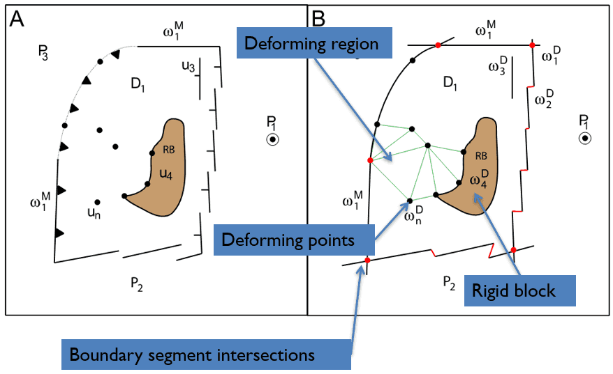

Deformation
This section covers deformation in pyGPlates.
Topological network
To model deformation, a topological network must first be created. This consists of a boundary polygon (resolved by intersecting boundary line segments, similar to topological closed plate polygons), optional interior rigid blocks, individual deforming points, and a triangulation (with vertices from boundary, rigid blocks and deforming points).

On the left are the elements that make up a topological network. On the right is the resolving of these elements at a reconstruction time to form a resolved topological network.
More information on topological networks in GPlates/pyGPlates can be found in the following paper:
Michael Gurnis, Ting Yang, John Cannon, Mark Turner, Simon Williams, Nicolas Flament, R. Dietmar Müller, 2018, Global tectonic reconstructions with continuously deforming and evolving rigid plates, Computers & Geosciences, 116, 32-41, doi: 10.1016/j.cageo.2018.04.007
Rigid blocks
A topological network can optionally have interior islands that are rigid.
Note
Any interior geometry of a network that is a polygon is considered a rigid block.
And the interior rings (if any) of a rigid block polygon are ignored (ie, only the exterior ring applies).
Each rigid block is represented by a pygplates.ReconstructedFeatureGeometry, and is obtained from a pygplates.ResolvedTopologicalNetwork with:
rigid_blocks = resolved_topological_network.get_rigid_blocks()
For example, you can get the plate ID and boundary polygon of each interior rigid block (if any):
for rigid_block in rigid_blocks:
rigid_block_plate_id = rigid_block.get_feature().get_reconstruction_plate_id()
rigid_block_boundary = rigid_block.get_reconstructed_geometry()
Network triangulation
The network triangulation of a resolved topological network is the Delaunay triangulation of vertices
obtained from the network’s boundary (polygon) and any interior rigid blocks (polygons) and any interior geometries (points or lines).
The Delaunay triangulation is a triangulation of the convex hull of its vertices. So it includes triangles outside the network boundary
(and also includes triangles inside any interior rigid blocks). However, the deforming region of a network is defined to be inside the
network’s boundary polygon (but outside its interior rigid block polygons, if any). Hence the triangulation contains triangles that are outside
the deforming region. Therefore each triangle has a flag indicating whether
it is inside the deforming region (if it’s centroid is in the deforming region) or not. These triangles in the deforming region of a network triangulation
are referred to as the deforming triangulation.
Note
The Delaunay triangulation is not a constrained triangulation. This means the edges of some Delaunay triangles can cross over network boundary edges or interior block edges, rather than be constrained to follow them. However the flagging of Delaunay triangles (as deforming or non-deforming) deals with this quite effectively for current topological network datasets.
The deforming triangles in a network triangulation do not overlap any
interior rigid blocks (other than the above-mentioned note about constrained triangulations).
In other words, the deforming triangles (in the network triangulation) represent the deforming region of a
resolved topological network and the rigid blocks (if any) represent the rigid regions.
A network triangulation is represented by a pygplates.NetworkTriangulation, and is obtained from a pygplates.ResolvedTopologicalNetwork with:
network_triangulation = resolved_topological_network.get_network_triangulation()
It consists of a sequence of vertices and a sequence of triangles. Each vertex is represented by a pygplates.NetworkTriangulation.Vertex and contains a position,
a velocity, and a strain rate, and a list of incident vertices and incident triangles. Each triangle is represented by a pygplates.NetworkTriangulation.Triangle
and contains a flag indicating whether it’s deforming or not, and contains a strain rate, and references three vertices and three adjacent triangles.
triangles = network_triangulation.get_triangles()
vertices = network_triangulation.get_vertices()
for triangle in triangles:
triangle_is_in_deforming_region = triangle.is_in_deforming_region
triangle_strain_rate = triangle.strain_rate
for index in range(3):
triangle_vertex = triangle.get_vertex(index)
adjacent_triangle = triangle.get_adjacent_triangle(index)
if adjacent_triangle: # if not at a triangulation boundary
...
for vertex in vertices:
vertex_position = vertex.position
vertex_strain_rate = vertex.strain_rate
vertex_velocity = vertex.get_velocity() # a function optionally accepting various velocity calculation parameters
for incident_vertex in vertex.get_incident_vertices():
...
for incident_triangle in vertex.get_incident_triangles():
...
Strain rates in triangulation
Each triangle in a network triangulation is assigned a strain rate
that is constant across the triangle (and is zero if the triangle is not deforming).
Furthermore, the strain rate of each triangle can optionally be clamped to a maximum strain rate.
Then each vertex in the triangulation is assigned a strain rate that is an area-weighted average of the (potentially clamped) strain rates
from deforming triangles incident to the vertex.
Finally, the strain rate that is queried at an arbitrary location (within the deforming triangulation) is either assigned the strain rate of the triangle containing that location, or calculated by interpolating the strain rates of nearby vertices if strain rates are smoothed.
Note
Both strain rate clamping and smoothing affect strain rate queries
(such as pygplates.ReconstructedGeometryTimeSpan.get_strain_rates()). They also affects strain queries (such as pygplates.ReconstructedGeometryTimeSpan.get_strains()),
since strain is accumulated from strain rate.
Strain rate clamping
Strain rates can optionally be clamped to a maximum strain rate to avoid excessive or spurious extension/compression in some triangles of a deforming triangulation. This can happen in some topological networks depending on how they were built.
It is the total strain rate that is clamped, since it includes both the normal and shear components of deformation.
When a strain rate is clamped, all components of its tensor (specifically its spatial gradients of velocity tensor)
are scaled equally to ensure its total strain rate equals the maximum total strain rate.
Note
Clamping the total strain rate also limits quantities derived from strain rate such as crustal thinning and tectonic subsidence.
Strain rate clamping is determined by pygplates.ResolveTopologyParameters.enable_strain_rate_clamping when topological networks are resolved at a reconstruction time
(using pygplates.TopologicalModel, pygplates.TopologicalSnapshot or pygplates.resolve_topologies()).
And the maximum strain rate is pygplates.ResolveTopologyParameters.max_clamped_strain_rate.
For example, to enable strain rate clamping (which is disabled by default) for a topological model, but keep the default maximum strain rate:
topological_model = pygplates.TopologicalModel(
'topologies.gpml',
'rotations.rot',
default_resolve_topology_parameters = pygplates.ResolveTopologyParameters(
enable_strain_rate_clamping = True))
Strain rate smoothing
Strain rates can optionally be smoothed to help reduce the faceted (piecewise constant) strain rate across a deforming triangulation (due to each triangle having a constant strain rate across its face).
Note
Smoothing the strain rate also affects quantities derived from strain rate such as crustal thinning and tectonic subsidence.
The strain rate at an arbitrary location within a deforming triangulation is affected by the smoothing value:
pygplates.StrainRateSmoothing.none- No smoothing. The strain rate is equal to the (constant) strain rate of thetrianglecontaining the query location.pygplates.StrainRateSmoothing.barycentric- Use linear interpolation of the strain rates of the 3verticesof thetrianglecontaining the query location.pygplates.StrainRateSmoothing.natural_neighbour- Use natural neighbour interpolation of the strain rates of triangulationverticesnear the query location.
Strain rate smoothing is determined by pygplates.ResolveTopologyParameters.strain_rate_smoothing when topological networks are resolved at a reconstruction time
(using pygplates.TopologicalModel, pygplates.TopologicalSnapshot or pygplates.resolve_topologies()).
For example, to disable strain rate smoothing (which is natural neighbour smoothing by default) for a topological model:
topological_model = pygplates.TopologicalModel(
'topologies.gpml',
'rotations.rot',
default_resolve_topology_parameters = pygplates.ResolveTopologyParameters(
strain_rate_smoothing = pygplates.StrainRateSmoothing.none))
Exponential rift stretching profile
A rift is typically modeled using two topological networks, one on each side of the rift axis. Each side of the rift axis typically has a single row of triangles (between the un-stretched side and the rift axis). As a result, the strain rate at any location within the rift will essentially be constant, even when the strain rates are smoothed. This is because triangulation vertices, along both the un-stretched boundary line and the rift axis, will effectively end up with the strain rate of the triangles (which is constant across each triangle).
To avoid the problem of constant stretching across the rift, an exponential rift stretching profile can be activated by adding rift left/right plate ID properties to a topological network feature.
Internally the exponential strain rate profile is implemented by automatically adding more points to the interior of a deforming triangulation and distributing the velocities at these points such that the strain rate varies exponentially (along the stretching direction) from the un-stretched side of the rift towards the rift axis.
Note
This works reasonably well for regular rifts (like AFR-SAM), but not as well for oblique rifts (like AUS-ANT).
Note
The exponential rift stretching profile affects quantities derived from strain rate such as crustal thinning and tectonic subsidence.
Rift left/right plate IDs
An exponential rift stretching profile is activated by adding a gpml:riftLeftPlate/gpml:riftRightPlate pair of conjugate plate ID properties to a topological network pygplates.Feature.
This can be done, for example, by using the rift_parameters argument of pygplates.Feature.create_topological_network_feature().
The presence of these plate IDs triggers the internal generation of an exponential strain rate rift profile when the topological networks are resolved at a reconstruction time
(using pygplates.TopologicalModel, pygplates.TopologicalSnapshot or pygplates.resolve_topologies()).
For example, to create a rift between Africa and South America:
SAM_rift_network = pygplates.GpmlTopologicalNetwork([...])
SAM_rift_feature = pygplates.Feature.create_topological_network_feature(
SAM_rift_network,
name='SAM rift',
valid_time=(145, 115),
rift_parameters=(201, 701))
SAM_rift_feature.set_reconstruction_plate_id(201)
AFR_rift_network = pygplates.GpmlTopologicalNetwork([...])
AFR_rift_feature = pygplates.Feature.create_topological_network_feature(
AFR_rift_network,
name='AFR rift',
valid_time=(145, 115),
rift_parameters=(201, 701))
AFR_rift_feature.set_reconstruction_plate_id(701)
Note
If the rift left/right plate ID properties are not present in a topological network feature then it is not considered a rift.
There are also three other parameters, in addition to the rift left/right plate IDs, that are optional and can either be set individually in each a topological network feature
(eg, using the rift_parameters argument of pygplates.Feature.create_topological_network_feature()) or as default values for all topological network features
(using pygplates.ResolveTopologyParameters).
Note
If these parameters are set in both places, then the feature properties have precedence.
When set on a topological network feature they become feature properties named:
gpml:riftExponentialStretchingConstantgpml:riftStrainRateResolutionLog10(note that this is \(\log_{10}\) of the rift strain rate resolution)gpml:riftEdgeLengthThresholdDegrees
…and for features missing these properties these parameters are instead obtained from pygplates.ResolveTopologyParameters attributes:
pygplates.ResolveTopologyParameters.rift_exponential_stretching_constantpygplates.ResolveTopologyParameters.rift_strain_rate_resolutionpygplates.ResolveTopologyParameters.rift_edge_length_threshold_degrees
…when the topological networks are resolved at a reconstruction time
(using pygplates.TopologicalModel, pygplates.TopologicalSnapshot or pygplates.resolve_topologies()).
The default values (in pygplates.ResolveTopologyParameters()) should be fine
for resolving rift features that do not contain the associated rift feature properties. But you can change the defaults as needed.
For example, new default values can be specified for a topological model:
topological_model = pygplates.TopologicalModel(
'topologies.gpml',
'rotations.rot',
default_resolve_topology_parameters = pygplates.ResolveTopologyParameters(
rift_exponential_stretching_constant = 1.5, # default is 1.0
rift_strain_rate_resolution = 1e-16, # default is 5e-17
rift_edge_length_threshold_degrees = 0.2)) # default is 0.1
Rift exponential stretching constant
The strain rate in the rift stretching direction varies exponentially from the un-stretched side of the rift towards the rift axis. The spatial variation in strain rate is:
\[strain\_rate(x) = strain\_rate \times e^{C x} \frac{C}{e^C - 1}\]
…where \(strain\_rate\) is the un-subdivided, original (constant) strain rate, \(C\) is the rift exponential stretching constant and \(x = 0\) at the un-stretched side and \(x = 1\) at the stretched point. Therefore \(strain\_rate(0) < strain\_rate < strain\_rate(1)\). For example, when \(C = 1.0\) then \(strain\_rate(0) = 0.58 \times strain\_rate\) and \(strain\_rate(1) = 1.58 \times strain\_rate\).
Rift strain rate resolution
The rift strain rate resolution controls how accurately the actual strain rate curve (across rift profile) matches the exponential curve (in units of \(second^{-1}\)). Rift edges in the network triangulation are sub-divided until the strain rate matches the exponential curve (within this tolerance).
Rift edge length threshold
Rift edges in network triangulation shorter than the rift edge length threshold (in degrees) will not be further sub-divided.